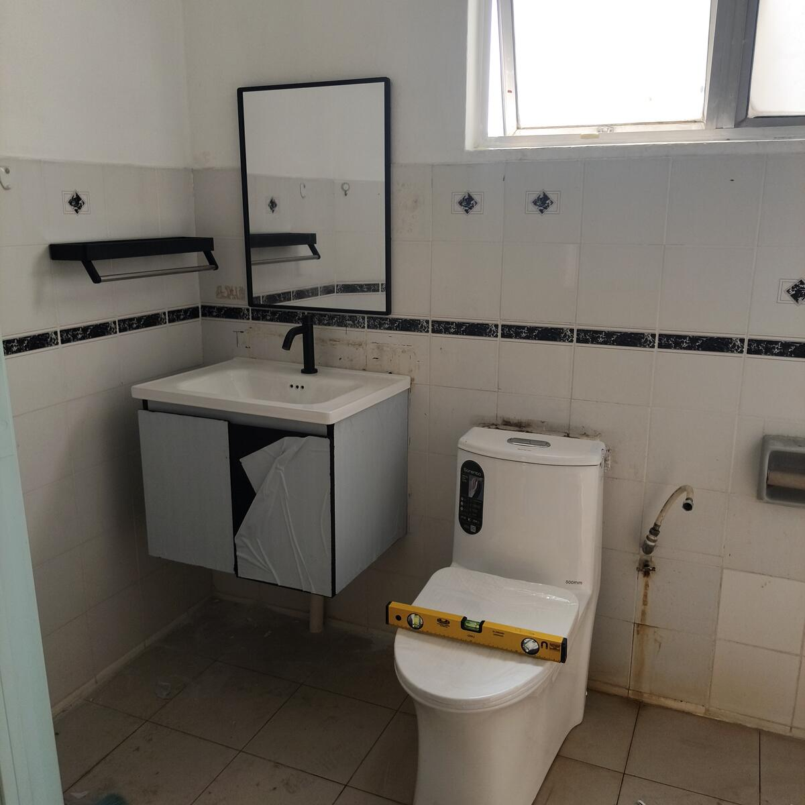
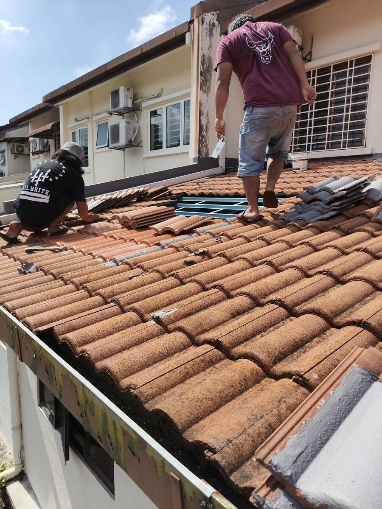

PLUMBER DAN TUKANG BUMBUNGPLUMBING & HOME REPAIR
Plumber dan tukang bumbung Kuala Lumpur & Selangor
Kami membaiki paip dan bumbung bocor, mengatasi sinki dan tandas tersumbat, mencuci dan menukar tangki air serta membuat kerja waterproofing di Kuala Lumpur dan Selangor. Pilih servis untuk lihat butiran dan contoh kerja kami.

Cari titik bocor dahulu, baiki bahagian yang rosak sahaja.

Pembaikan sinki, mangkuk tandas dan kelengkapan bilik air.

Kerja membuka sumbatan pada saluran paip sinki, bilik air dan tandas.

Pemeriksaan dan pembaikan kebocoran bumbung rumah.

Kerja kalis air untuk slab dan kawasan yang mengalami kebocoran.

Kerja kalis air dan pembaikan kebocoran lantai bilik air mengikut keadaan tapak.
Servis paip dan pembaikan rumah dalam satu perkhidmatan.
Panggilan & WhatsApp dijawab 24 jam, setiap hari.
Bincang masalah dan dapatkan sebut harga melalui WhatsApp sebelum kerja dimulakan.
Foto dan video hasil kerja kami. Leret ke tepi untuk lihat lagi.
Pilih kawasan anda untuk maklumat servis plumber dan tukang bumbung berdekatan.
Setiap kerja berbeza. Harga bergantung pada punca masalah, bahan, akses ke tempat kerja dan lokasi rumah anda. Sebab itu kami beri sebut harga terus kepada anda melalui WhatsApp — tiada caj tersembunyi.
Percuma caj pengangkutan dalam radius 10 km dari Kg Klang Gates Baru:
Kawasan luar radius ini dikenakan caj pengangkutan ikut jarak — kami maklumkan dahulu sebelum datang.
Harga bergantung pada jenis kerja dan keadaan sebenar. Sila WhatsApp owner terus dengan gambar masalah dan lokasi untuk sebut harga yang tepat.
Boleh. Hantar gambar atau video, nama kawasan dan penerangan ringkas. Untuk kebocoran tersembunyi atau kerja besar, kami mungkin cadangkan lawatan pemeriksaan dahulu.
Tidak. Kami hanya mulakan kerja selepas anda bersetuju dengan harga dan skop kerja.
Dalam radius 10 km dari Kg Klang Gates Baru. Luar kawasan ini, caj dikira ikut jarak dan dimaklumkan sebelum lawatan.
4 langkah mudah. Isi borang di bawah — permintaan akan dihantar terus ke WhatsApp kami untuk pengesahan.
Paip bocor, sinki tersumbat, tandas, tangki air, bumbung bocor atau waterproofing.
Nyatakan masalah dengan jelas dan kawasan kerja.
Kami bincang harga melalui WhatsApp sebelum kerja dimulakan.
Kami hubungi anda untuk sahkan tarikh dan masa lawatan.
Kami amat menghargai maklum balas anda. Kongsikan pengalaman anda menggunakan servis kami di Google.
⭐ Baca Ulasan di Google ☆ Tulis Ulasan Google 📍 Lokasi di Google MapsHubungi kami untuk pertanyaan dan sebut harga.
🕗 Waktu kerja: 8 pagi – 10 malam, setiap hari
📞 Panggilan & WhatsApp: dijawab 24 jam